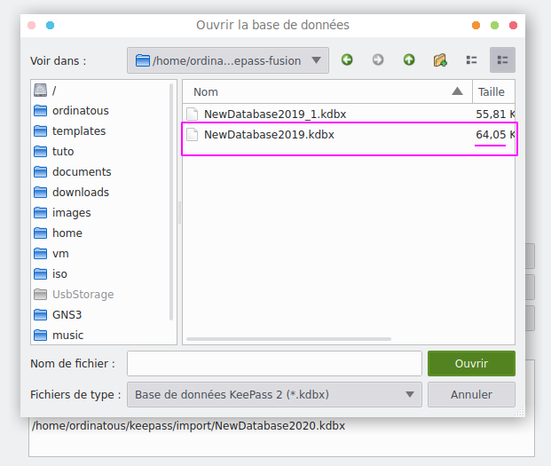
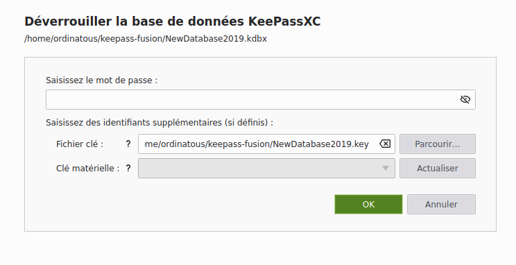
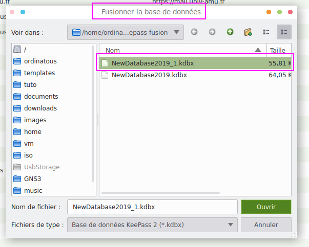
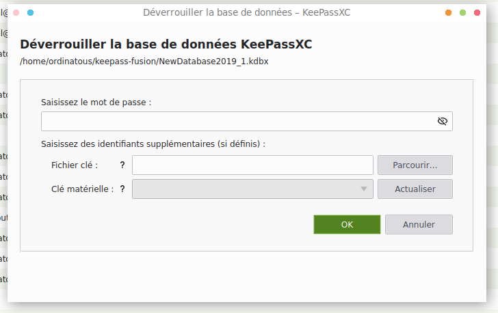

première base
Ouvrir une première base de données.
On voit sur la capture 2 bases différentes, ne faisant d’ailleurs pas le même poids. 
J’ouvre donc la première. 
Cliquer sur le bouton de menu base de données et sélectionner
fusionner à partir d'une base de données.
Et sélectionner la seconde . 
La dévérouiller 
La fusion est automatique , la nouvelle base conservera les changements les plus récents.
Ce travail est sous licence Attribution-NonCommercial 4.0
International.